Mastering GDAL Tools (Full Course Material)
A practical hands-on introduction to GDAL and OGR command-line programs
Ujaval Gandhi
- Introduction
- Setting up the Environment
- Download the Data Package
- Get the Course Videos
- Getting Familiar with the Command Prompt
- 1. GDAL Tools
- 2. OGR Tools
- 3. Running commands in batch
- 4. Automating and Scheduling GDAL/OGR Jobs
- Tips for Improving Performance
- Supplement
- Check Supported Formats and Capabilities
- Extracting Image Metadata and Statistics
- Validating COGs
- Creating Contours
- Creating Colorized Imagery
- Creating Colorized Hillshade
- Removing JPEG Compression Artifacts
- Splitting a Mosaic into Tiles
- Extracting Projection Information from a Raster
- Merging Files with Different Resolutions
- Calculate Pixel-Wise Statistics over Multiple Rasters
- Extracting Values from a Raster
- Masking Values using a Binary Raster
- Raster to Vector Conversion
- Viewshed Analysis
- Working with KML Files
- Group Statistics
- Using Virtual Layers
- Resources
- Data Credits
- License

Introduction
GDAL is an open-source library for raster and vector geospatial data formats. The library comes with a vast collection of utility programs that can perform many geoprocessing tasks. This class introduces GDAL and OGR utilities with example workflows for processing raster and vector data. The class also shows how to use these utility programs to build Spatial ETL pipelines and do batch processing.

Setting up the Environment
This course requires installing the GDAL package. Along with GDAL, we highly recommend installing QGIS to view the result of the command-line operations. You will find installation instructions for both the software below.
Install GDAL
The preferred method for installing the GDAL Tools is via Anaconda. Follow these steps to install Anaconda and the GDAL library.
Download the Anaconda Installer for Python 3.7 (or a higher version) for your operating system. Once downloaded, double click the installer and install it into the default suggested directory.
Note: If your username has spaces, or non-English characters, it
causes problems. In that case, you can install it to a path such as
C:\anaconda.

Windows
Once Anaconda installed, search for Anaconda Prompt in the Start Menu and launch a new window.
- Create a new environment named
gdal. When prompted to confirm, typeyand press Enter.
conda create --name gdalNote: You can select Right Click → Paste to paste commands in Anaconda Prompt.
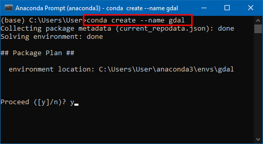
- Activate the environment and install the
gdalpackage. When prompted to confirm, typeyand press Enter.
conda activate gdal
conda install -c conda-forge gdal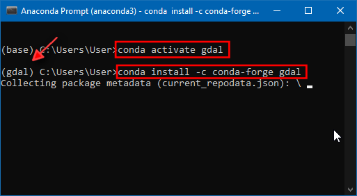
- Once the installation finishes, verify if you are able to run the GDAL tools. Type the following command and check if a version number is printed.
gdalinfo --versionThe version number displayed for you may be slightly different. As long as you do not get a
command not founderror, you should be set for the class.
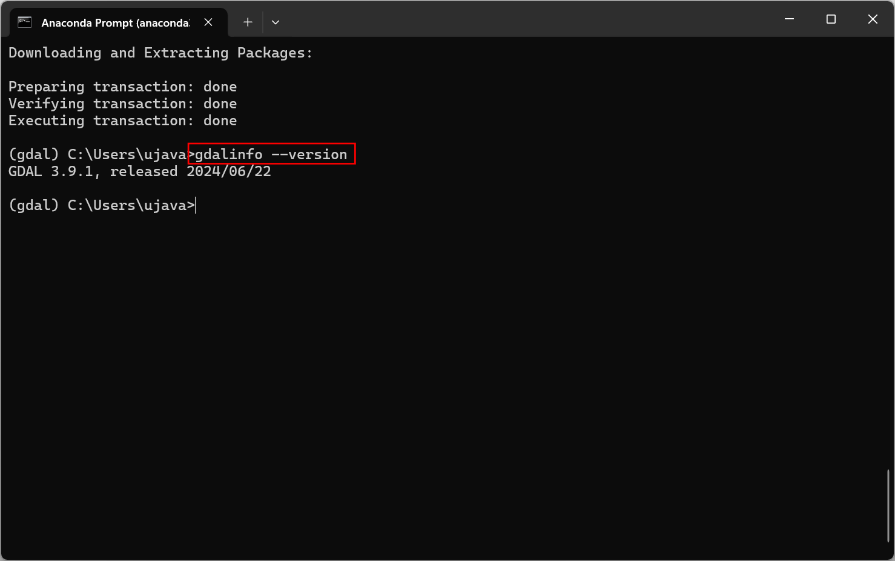
Mac/Linux
Once Anaconda is installed, launch a Terminal window.
- Create a new environment named
gdal. When prompted to confirm, typeyand press Enter.
conda create --name gdal
- Activate the environment and install the
gdalpackage. When prompted to confirm, typeyand press Enter.
conda activate gdal
conda install -c conda-forge gdal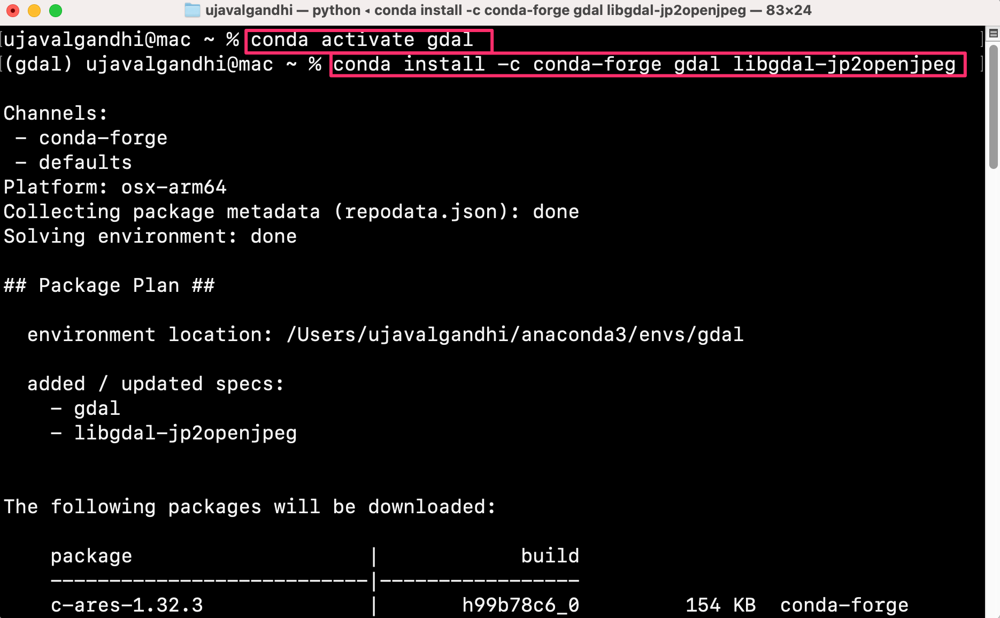
- Once the installation finishes, verify if you are able to run the GDAL tools. Type the following command and check if a version number is printed.
gdalinfo --versionThe version number displayed for you may be slightly different. As long as you do not get a
command not founderror, you should be set for the class.
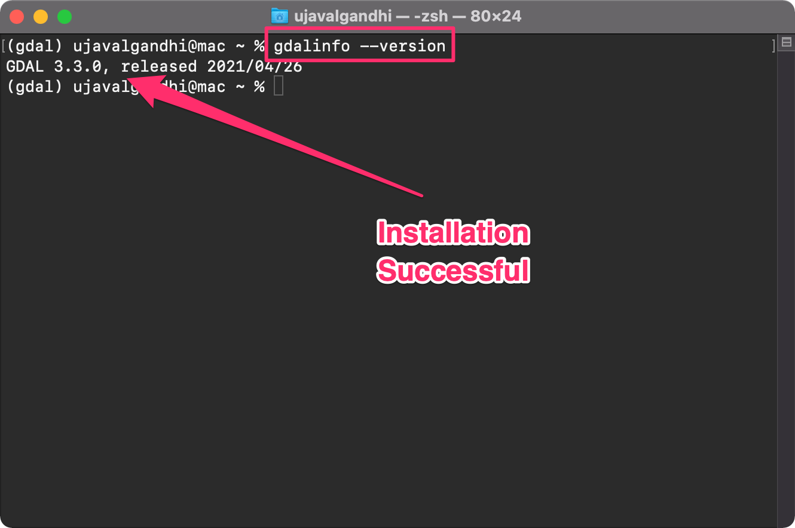
Google Colab Notebook [Optional]
We also provide a Google Colab Notebook for the course that allows you to run all the workflows in the cloud without the need to install any packages or download any datasets. You may use this as an alternative environment if you cannot install the software on your machine due to security restrictions.

Install QGIS
This course uses QGIS LTR version for visualization of results. It is not mandatory to install QGIS, but highly recommended.
Please review QGIS-LTR Installation Guide for step-by-step instructions.
Download the Data Package
The code examples in this class use a variety of datasets. All the
required datasets are supplied to you in the gdal_tools.zip
file. Unzip this file to the Downloads directory. All
commands below assume the data is available in the
<home folder>/Downloads/gdal_tools/ directory.
Download gdal-tools.zip.
Note: Certification and Support are only available for participants in our paid instructor-led classes.
Get the Course Videos
The course is accompanied by a set of videos covering the all the modules. These videos are recorded from our live instructor-led classes and are edited to make them easier to consume for self-study. We have 2 versions of the videos:
YouTube
We have created a YouTube Playlist with separate videos for each section and exercise to enable effective online-learning. Access the YouTube Playlist ↗
Vimeo
We are also making combined full-length video for each module available on Vimeo. These videos can be downloaded for offline learning. Access the Vimeo Playlist ↗
Getting Familiar with the Command Prompt
All the commands in the exercises below are expected to be run from the Anaconda Prompt on Windows or a Terminal on Mac/Linux. We will now cover basic terminal commands that will help you get comfortable with the environment
Windows
| Command | Description | Example |
|---|---|---|
cd |
Change directory | cd Downloads\gdal-tools |
cd .. |
Change to the parent directory | cd .. |
dir |
List files in the current directory | dir |
del |
Delete a file | del test.txt |
rmdir |
Delete a directory | rmdir /s test |
mkdir |
Create a directory | mkdir test |
type |
Print the contents of a file | type test.txt |
> output.txt |
Redirect the output to a file | dir /b > test.txt |
cls |
Clear screen | cls |
Mac/Linux
| Command | Description | Example |
|---|---|---|
cd |
Change directory | cd Downloads/gdal-tools |
cd .. |
Change to the parent directory | cd .. |
ls |
List files in the current directory | ls |
rm |
Delete a file | rm test.txt |
rm -R |
Delete a directory | rm -R test |
mkdir |
Create a directory | mkdir test |
cat |
Print the contents of a file | cat test.txt |
> output.txt |
Redirect the output to a file | ls > test.txt |
clear |
Clear screen | clear |
1. GDAL Tools

1.1 Basic Raster Processing
We will start learning the basic GDAL commands by processing
elevation rasters from SRTM. In the Command Prompt window, use
the cd command to change to the srtm directory
which 4 individual SRTM tiles around the Mt. Everest region.
cd srtmUse the gdalinfo command to check the information about
a single image.
gdalinfo N28E086.hgt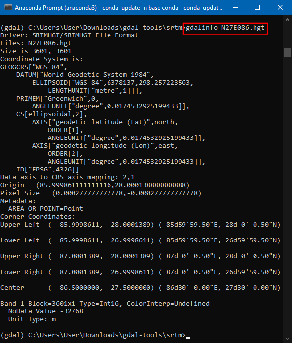
A useful parameter is -stats which computes and displays
image statistics. Run it on the raster to get some statistics of pixel
values in the image.
gdalinfo -stats N28E086.hgt
1.1.1 Merging Tiles
We will now merge the 4 neighboring SRTM tiles into 1 raster so we
can work with them together. GDAL provides a useful format called Virtual Raster that
allows us to create a Virtual file with .vrt
extension that is a pointer to multiple source files. A
.vrt file is just a text file, so it doesn’t consume any
disk space but allows us to run any GDAL command as if it was a raster
file.
First we need to create a text file containing all the files we want
to merge. We can use the dir command on Command prompt to
list the files matching the pattern *.hgt and redirect the
output to a file. Here the /b option runs the command in
the Bare mode which excludes all info except file names.
Windows
dir /b *.hgt > filelist.txtFor Mac/Linux systems, the same can be achieved using the
ls command.
Mac/Linux
ls *.hgt > filelist.txtOnce the command finishes, verify that the filelist.txt
has the names of the source tiles.
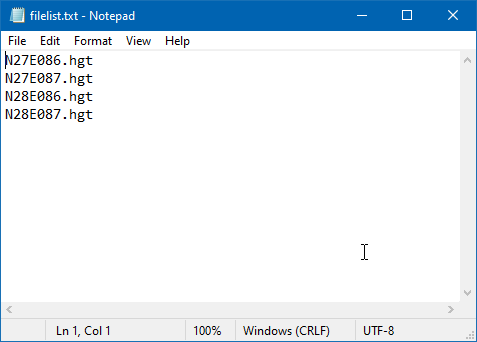
We can now use the gdalbuildvrt program to create a
virtual raster from the source files in the
filelist.txt.
gdalbuildvrt -input_file_list filelist.txt merged.vrt
Note: We could have done this operation in a single step using the command
gdalbuildvrt merged.vrt *.hgt. However, some versions of GDAL on Windows do not expand the*wildcard correctly and the command results in an error. It is recommended to use a file list instead of wildcards with GDAL commands on Windows to avoid unexpected results.[reference]
Exercise 1
Can you find what is the highest elevation value in the merged raster? Since these rasters are around the Mt.Everest region, the MAXIMUM value will be the elevation of the summit.
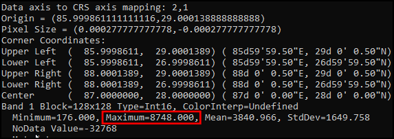
1.1.2 Converting Formats
Let’s convert the Virtual Raster to a GeoTIFF file.
gdal_translate program allows us to convert between any of
the hundreds of data formats supported by GDAL. The format is recognized
from the file extension. Alternatively, you can also specify it using
the -of option with the short name of the
format such a GTiff.
gdal_translate -of GTiff merged.vrt merged.tif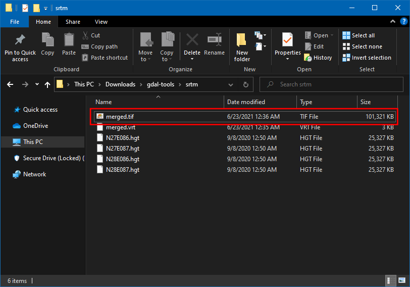
1.1.3 Compressing Output
The default output GeoTIFF file is uncompressed - meaning each
pixel’s value is stored on the disk without any further processing. For
large rasters, this can consume a lot of disk space. A smart approach is
to use a lossless compression algorithm to reduce the size of the raster
while maintaining full fidelity of the original data. GDAL supports many
compression algorithms out-of-the-box and can be specified with GDAL
commands using the -co option. The most popular loss-less
compression algorithms are DEFLATE,
LZW and PACKBITS. We can try the
DEFLATE algorithm on our dataset.
gdal_translate -of GTiff merged.vrt merged.tif -co COMPRESS=DEFLATE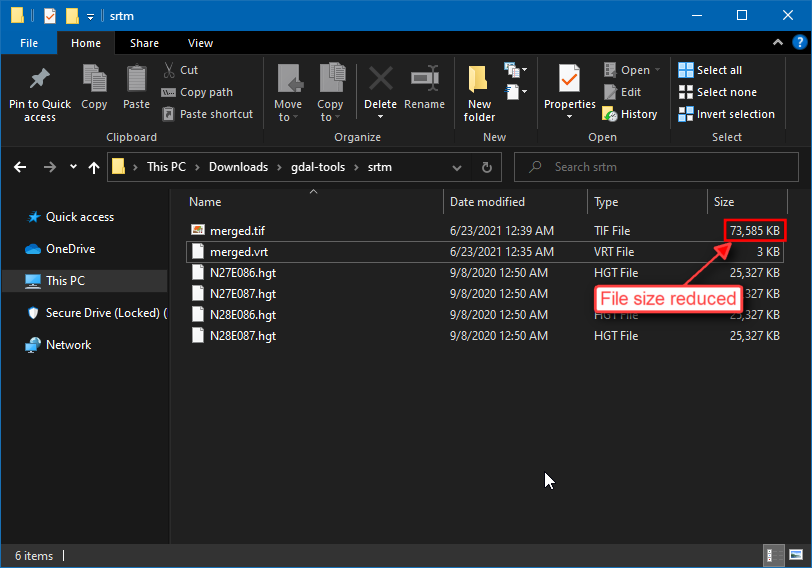
The uncompressed file size was 100+ MB. After
applying the DEFLATE compression, the file size was reduced to
75MB. We can further reduce the file size by specifying
additional options. The PREDICTOR option helps compress
data better when the neighboring values are correlated. For elevation
data, this is definitely the case. The TILED option will
compress the data in blocks rather than line-by-line.
Note: You can split long commands into multiple lines using the line-continuation character. Windows shell uses
^as the line-continuation, while Mac/Linux shells use\as the line continuation.
Windows
gdal_translate -of GTiff merged.vrt merged.tif ^
-co COMPRESS=DEFLATE -co TILED=YES -co PREDICTOR=2Mac/Linux
gdal_translate -of GTiff merged.vrt merged.tif \
-co COMPRESS=DEFLATE -co TILED=YES -co PREDICTOR=2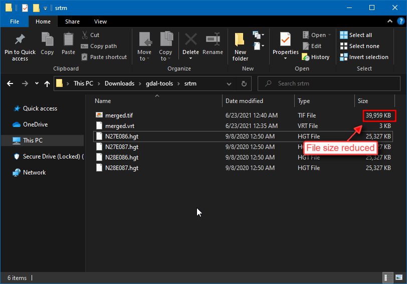
The resulting file now comes out much smaller at 39MB. Check this article GeoTIFF compression and optimization with GDAL to learn more about various options and compression algorithms.
1.1.4 Setting NoData Values
The output from gdalinfo program shows that the original
data has a NoData Value set to -32768. We can set
a new NoData value. The -a_nodata option allows us
to specify a new value.
Windows
gdal_translate -of GTiff merged.vrt merged.tif ^
-co COMPRESS=DEFLATE -co TILED=YES -co PREDICTOR=2 -a_nodata -9999Mac/Linux
gdal_translate -of GTiff merged.vrt merged.tif \
-co COMPRESS=DEFLATE -co TILED=YES -co PREDICTOR=2 -a_nodata -9999After running the command, you can verify the results using the
gdalinfo command.
1.1.5 Writing Cloud-Optimized GeoTIFF (COG)
A new format called Cloud-Optimized
GeoTIFF (COG) is making access to such a vast amount of imagery
easier to access and analyze. A Cloud-optimized GeoTIFF is
behaving just like a regular GeoTIFF imagery, but instead of downloading
the entire image locally, you can access portions of imagery
hosted on a cloud server streamed to clients like QGIS. This makes it
very efficient to access this data and even analyze it - without
downloading large files. GDAL makes it very easy to create COG files by
specifying the -of COG option. Specifying the
-co NUM_THREADS=ALL_CPUS helps speed up the creation
process by using all available CPUs for compression and creating
internal overviews.
The GDAL COG
Driver has the following creation options -co enabled
by default.
- Has internal tiling (i.e.
-co TILED=YES) - LZW Compression (i.e.
-co COMPRESS=LZW) - Automatic Selection of Predictor
(i.e.
-co PREDICTOR=YESchooses appropriate predictor for data type)
Windows
gdal_translate -of COG merged.vrt merged_cog.tif ^
-co COMPRESS=DEFLATE -co PREDICTOR=YES -co NUM_THREADS=ALL_CPUS ^
-a_nodata -9999Mac/Linux
gdal_translate -of COG merged.vrt merged_cog.tif \
-co COMPRESS=DEFLATE -co PREDICTOR=YES -co NUM_THREADS=ALL_CPUS \
-a_nodata -99991.2 Processing Elevation Data
GDAL comes with the gdaldem utility that provides a
suite of tools for visualizing and analyzing Digital Elevation Models
(DEM). The tool supports the following modes
- Hillshade
- Slope
- Aspect
- Color-relief
- Terrain Ruggedness Index (TRI)
- Topographic Position Index (TPI)
- Roughness
Am important point to note is that the x, y and z units of the DEM
should be of same unit. If you are using data in a Geographic CRS (like
EPSG:4326) and the height units are in meters, you must specify a scale
value using -s option.
1.2.1 Creating Hillshade
Let’s create a hillshade map from the merged SRTM dataset. The
hillshade mode creates an 8-bit raster with a nice shaded
relief effect. This dataset has X and Y units in degrees and Z units in
meters. So we specify 111120 as the scale value.
gdaldem hillshade merged.tif hillshade.tif -s 111120gdaldem supports multiple hillshading algorithms. Apart
from the default, it currently includes the following algorithms.
- Combined shading (
-combined): A combination of slope and oblique shading. - Multidirectional shading (
-multidirectional): A combination of hillshading illuminated from 225 deg, 270 deg, 315 deg, and 360 deg azimuth.
Let’s create a hillshade map with the -multidirectional
option.
gdaldem hillshade merged.tif hillshade_combined.tif -s 111120 -multidirectional
Creating hillshade that is representative of a terrain is more of an ‘art’ than science. The best hand-drawn relief shading is still done manually by cartographers. Recent advances in Deep Learning have shown promise to reproduce the state-of-the-art relief shading using automated techniques. Learn more about Cartographic Relief Shading with Neural Networks and the accompanying software Eduard.
1.2.2 Creating Color Relief
A color relief map is an elevation map where different ranges of
elevations are colored differently. The color-relief mode
can create a color relief map with the colors and elevation ranges
supplied in a text file.
We need to supply the colormap using a text file. Create a new file
called colormap.txt with the following content and save it
in the same directory as merged.tif. The format of the text
file is elevation, red, green, blue values.
1000,101,146,82
1500,190,202,130
2000,241,225,145
2500,244,200,126
3000,197,147,117
4000,204,169,170
5000,251,238,253
6000,255,255,255We can supply this file to create a colorized elevation map.
gdaldem color-relief merged.tif colormap.txt colorized.tif
Color Relief
Exercise 2
Save the color relief in the PNG format.
1.3 Processing Aerial Imagery
Use the cd command to change to the naip
directory which contains individual aerial imagery tiles in the
JPEG2000 format.
cd naip1.3.1 Create a preview image from source tiles
The source imagery is heavily compressed and covers a large region. Instead of loading the full resolution tiles in a viewer, it is a good practice to create a preview mosaic that can help us assess the coverage and quality of the data.
We first create a Virtual Raster mosaic from all the
.jp2 tiles. We can create a text file containing all the
files we want to merge.
Windows
dir /b *.jp2 > filelist.txtMac/Linux
ls *.jp2 > filelist.txtText File with the List of Images
We are working with Photometric RGB tiles and want to apply JPEG
compression on the result. To avoid JPEG artifact and maintain nodata
values, it is a good practice to add an Alpha band which will contain
the mask containing all valid pixels. We use the -addalpha
option to create an alpha band.
gdalbuildvrt -addalpha -input_file_list filelist.txt naip.vrtWe can use the -outsize option and specify a percentage
to generate a smaller size preview. The below command generates a 2%
preview image in JPEG format. Since we have a 4-band image, we specify
which bands to be used for generating the JPG image using the
-b option.
gdal_translate -b 1 -b 2 -b 3 -of JPEG -outsize 2% 2% naip.vrt naip_preview.jpg 
1.3.2 Create a Tile Index
When working with large amounts of imagery tiles, it is useful to generate a tile index. A tile index layer is a polygon layer with the bounding box of each tile. An index layer allows us to check the coverage of the source data and locate specific tiles. It is a simple but effective way to catalog raster data from a hard drive or from a folder on your computer.
gdaltindex program creates a tile index from a list of
input files. Here we can use the --optfile option to supply
the list of files via a file.
gdaltindex -write_absolute_path index.shp --optfile filelist.txt1.3.3 Mosaic and clip to AOI
Let’s say we want to mosaic all the source tiles into a single image. We also want to clip the mosaic to a given AOI.

We can use the gdalwarp utility to clip the raster using
the -cutline option.
gdalwarp -cutline aoi.shp -crop_to_cutline naip.vrt aoi_cut.tif -co COMPRESS=DEFLATE -co TILED=YESWe can also add JPEG compression to the output file to reduce the
file size. Refer to the post GeoTiff
Compression for Dummies by Paul Ramsey that gives more insights into
compression imagery. Note that JPEG is a lossy compression method and
can cause edge artifacts for image mosaics. To prevent this, we specify
the --config GDAL_TIFF_INTERNAL_MASK YES option that uses
the mask from the alpha band.
Windows
gdal_translate aoi_cut.tif aoi.tif ^
-co COMPRESS=JPEG -co TILED=YES -co PHOTOMETRIC=YCBCR -co JPEG_QUALITY=75 ^
-b 1 -b 2 -b 3 -mask 4 --config GDAL_TIFF_INTERNAL_MASK YESMac/Linux
gdal_translate aoi_cut.tif aoi.tif \
-co COMPRESS=JPEG -co TILED=YES -co PHOTOMETRIC=YCBCR -co JPEG_QUALITY=75 \
-b 1 -b 2 -b 3 -mask 4 --config GDAL_TIFF_INTERNAL_MASK YES
1.3.4 Creating Overviews
If you try loading the resulting raster into a viewer, you will
notice that it takes a lot of time for it to render. Zoom/Pan operations
are quite slow as well. This is because the viewer is rendering all the
pixels at native resolution. Since this is a very high-resolution
dataset, it requires processing a lot of pixels, even if you are zoomed
out. A common solution to this problem is to create Pyramid
Tiles or Overviews. This process creates low-resolution
versions of the image by averaging pixel values from higher resolution
pixels. If the pyramid tiles are present, imagery viewers can use it to
speed up the rendering process. GDAL provides the utility
gdaladdo to create overview tiles. GeoTIFF format supports
storing the overviews within the file itself. For other formats, the
program generates external overviews in the .ovr
format.
You can run the gdaladdo
(GDAL-Add-Overview)
command with default options to create internal overviews. Once the
overviews are created, try opening the aoi.tif in QGIS. You
will see that it renders much faster and zoom/pan operations are very
smooth.
gdaladdo aoi.tifThe default overviews use the nearest neighbor resampling. We can
pick any resampling method from the many available algorithms. We can
try the bilinear interpolation using the -r bilinear
option. Since the source imagery is JPEG compressed, we will compress
the overviews with the same compression.
gdaladdo -r bilinear --config COMPRESS_OVERVIEW JPEG aoi.tif1.4 Processing Satellite Imagery
This section shows how to use the satellite data from Landsat-8 and
create various derived products. Use the cd command to
switch to the landsat8 directory which contains Landsat-8
imagery. This directory has 5 individual GeoTIFF files for 5 different
bands from a single landsat-8 scene.
| Band Number | Band Name |
|---|---|
| B2 | Blue |
| B3 | Green |
| B4 | Red |
| B5 | Near Infrared |
| B8 | Panchromatic |
cd landsat81.4.1 Merging individual bands into RGB composite
Let’s create an RGB composite image by combining three 3 different
bands - Red, Green and Blue - into a single image. Here we must use the
-separate option which tells the command to place each
image in a separate band.
Note: GDAL tools also have a
gdal_merge.pyscript that can also merge rasters into an image. But this script loads all rasters into memory before merging them. This can lead to excessive RAM usage and out of memory errors when working with large files.gdal_merge.pycan also be slower than usinggdal_translate- when you have large files. So a preferred approach for merging large files would be using the virtual raster as shown here.
Windows
gdalbuildvrt -o rgb.vrt -separate ^
RT_LC08_L1TP_137042_20190920_20190926_01_T1_2019-09-20_B4.tif ^
RT_LC08_L1TP_137042_20190920_20190926_01_T1_2019-09-20_B3.tif ^
RT_LC08_L1TP_137042_20190920_20190926_01_T1_2019-09-20_B2.tifMac/Linux
gdalbuildvrt -o rgb.vrt -separate \
RT_LC08_L1TP_137042_20190920_20190926_01_T1_2019-09-20_B4.tif \
RT_LC08_L1TP_137042_20190920_20190926_01_T1_2019-09-20_B3.tif \
RT_LC08_L1TP_137042_20190920_20190926_01_T1_2019-09-20_B2.tifThen use gdal_translate to merge them.
gdal_translate rgb.vrt rgb.tif -co PHOTOMETRIC=RGB -co COMPRESS=DEFLATE Once the command finishes, you can view the result in QGIS.

1.4.2 Apply Histogram Stretch and Color Correction
The resulting composite appears quite dark and has low-contrast. QGIS applies a default contrast stretch based on the minimum and maximum values in the image. Due to the presence of clouds and cloud-shadows - there are outlier pixels that make the default contrast stretch not optimal.
Here’s what the histogram of the RGB composite looks like.
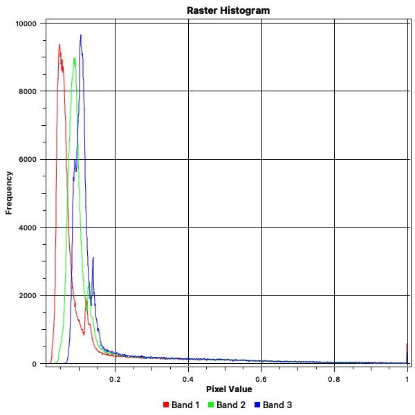
We can apply a histogram stretch to increase the contrast. This is
done using the -scale option. Since most of the pixels have
a value between 0 and 0.3, we can choose these are minimum and maximum
values and apply a contrast stretch to make them go from 0 to 255. The
resulting image will be an 8-bit color image where the input pixel
values are linearly scaled to the target value.
Note: Scaling the image will alter the pixel values. The resulting image is suitable for visualization, but they should never be used for analysis. Scientific analysis should always use the un-scaled pixel values.
gdal_translate -scale 0 0.3 0 255 -ot Byte rgb.tif rgb_stretch.tif
RGB Composite with Linear Stretch
We can also apply a non-linear stretch. gdal_translate
has a -exponent option that scales the input values using
the following formula. Choosing an exponent value between 0 and 1 will
enhance low intensity values - resulting in a brighter image. Learn
more
Let’s try exponent value of 0.5. The result is a much better looking output.
gdal_translate -scale 0 0.3 0 255 -exponent 0.5 -ot Byte rgb.tif rgb_stretch.tif
RGB Composite with Exponential Stretch
1.4.3 Raster Algebra
For raster algebra operations, GDAL provides a raster calculator
program gdal_calc.py. The input rasters are specified using
any letters from A-Z. These letters can be then referenced in the
expression. The expression is specified using the --calc
option and it supports NumPy syntax and functions.
gdalinfo -stats RT_LC08_L1TP_137042_20190920_20190926_01_T1_2019-09-20_B4.tifIt is important to set NoData value. As seen from the output above, NoData is set to -999.
Note that Windows users need to specify the full path to the GDAL scripts and run it with the python command as shown below. Mac/Linux users can just type the script name directly but if you get an error, you can also specify the full path on Mac/Linux as
python $CONDA_PREFIX/bin/gdal_merge.py
Windows
python %CONDA_PREFIX%\Scripts\gdal_calc.py ^
-A RT_LC08_L1TP_137042_20190920_20190926_01_T1_2019-09-20_B5.tif ^
-B RT_LC08_L1TP_137042_20190920_20190926_01_T1_2019-09-20_B4.tif ^
--outfile ndvi.tif --calc="(A-B)/(A+B)" --NoDataValue=-999Mac/Linux
gdal_calc.py -A RT_LC08_L1TP_137042_20190920_20190926_01_T1_2019-09-20_B5.tif \
-B RT_LC08_L1TP_137042_20190920_20190926_01_T1_2019-09-20_B4.tif \
--outfile ndvi.tif --calc="(A-B)/(A+B)" --NoDataValue=-999
Exercise 3
Create an NRG Composite image with Near Infrared, Red and Green bands. Apply a contrast stretch to the result and save it as a PNG image.
NRG Composite
1.4.4 Pan Sharpening
Most satellite and airborne sensors capture images in the Pan-chromatic band along with other spectral bands. The Red, Green, and Blue bands capture signals in the Red, Green, and Blue portions of the electromagnetic spectrum respectively. But the Pan-band captures the data across the entire range of wavelengths in the visible spectrum. This allows the sensor to capture the data in a higher spatial resolution than other bands which capture the signal from a subset of this wavelength range.
Landsat-8 satellite produces images at a 30m spatial resolution in the Red, Green, Blue bands and at a 15m spatial resolution in the Panchromatic band. We can use the higher spatial resolution of the Panchromatic band to improve the resolution of the other bands, resulting in a sharper image with more details. This process is called Pan-Sharpening.
GDAL comes with a script gdal_pansharpen.py that
implements the Brovey
algorithm to compute the pansharpened output. In the example below
we fuse the 15m resolution panchromatic band (B8) with the RGB composite
created in the previous step.
Windows
python %CONDA_PREFIX%\Scripts\gdal_pansharpen.py RT_LC08_L1TP_137042_20190920_20190926_01_T1_2019-09-20_B8.tif ^
rgb.tif pansharpened.tif -r bilinear -co COMPRESS=DEFLATE -co PHOTOMETRIC=RGBMac/Linux
gdal_pansharpen.py RT_LC08_L1TP_137042_20190920_20190926_01_T1_2019-09-20_B8.tif \
rgb.tif pansharpened.tif -r bilinear -co COMPRESS=DEFLATE -co PHOTOMETRIC=RGBWe can apply the same contrast stretch as before and compare the output. You will notice that the resulting composite is much sharper and can resolve the details in the scene much better.
Windows
gdal_translate -scale 0 0.3 0 255 -exponent 0.5 -ot Byte -a_nodata 0 ^
pansharpened.tif pansharpened_stretch.tifMac/Linux
gdal_translate -scale 0 0.3 0 255 -exponent 0.5 -ot Byte -a_nodata 0 \
pansharpened.tif pansharpened_stretch.tif

1.5 Processing WMS Layers
GDAL supports reading from a variety of web services, including Web Map Services (WMS) layers.
1.5.1 Listing WMS Layers
NASA’s Socioeconomic Data and Applications Center (SEDAC) provides
many useful data layers though WMS Services.
We can pick the URL for the appropriate service and list all available
layers using gdalinfo.
gdalinfo "WMS:https://sedac.ciesin.columbia.edu/geoserver/ows?version=1.3.0"
We can get more information about a particular layer by specifying the output from the command above. Let’s get more info about the Global Reservoir and Dam (GRanD), v1 layer.
gdalinfo "WMS:https://sedac.ciesin.columbia.edu/geoserver/ows?SERVICE=WMS&VERSION=1.3.0&REQUEST=GetMap&LAYERS=grand-v1%3Agrand-v1-reservoirs-rev01&CRS=CRS:84&BBOX=-153.037,-45.881,176.825,70.398"1.5.2 Creating a Service Description File
GDAL can also create a Service Description XML file from a WMS layer.
Many GIS programs, including QGIS recognize these XML files as valid
raster layers. This allows users to easily drag-and-drop them into their
favorite viewer to access a WMS service without any configuration.
gdal_translate can write the WMS XML files by specifying
-of WMS option.
gdal_translate -of WMS "WMS:https://sedac.ciesin.columbia.edu/geoserver/ows?SERVICE=WMS&VERSION=1.3.0&REQUEST=GetMap&LAYERS=grand-v1%3Agrand-v1-reservoirs-rev01&CRS=CRS:84&BBOX=-153.037,-45.881,176.825,70.398" reservoirs.xml1.5.3 Downloading WMS Layers
Some applications require offline access to WMS layers. If you want
to use a WMS layer as a reference map for field-data collection, or use
the layer on a system with low-bandwidth, you can create a georeferenced
raster from a WMS layer. Depending on the server configuration, WMS
layers can serve data for resolutions exceeding their native resolution,
so one should explicitly specify the output resolution. We can use
gdalwarp with the -tr option to specify the
output resolution you need for the offline raster. In the example below,
we create a 0.1 degree resolution raster from the WMS layer.
gdalwarp -tr 0.1 0.1 reservoirs.xml reservoirs.tif -co COMPRESS=DEFLATE -co TILED=YES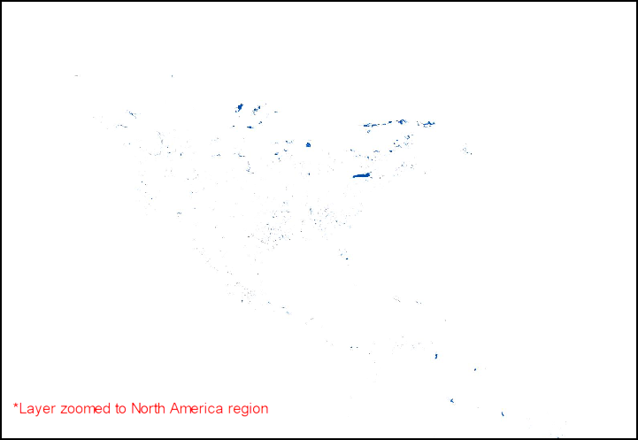
We can also extract a higher resolution extract for a specific region
by specifying the extent using the -te option.
gdalwarp -tr 0.005 0.005 -te 68.106 6.762 97.412 37.078 reservoirs.xml reservoirs_india.tif -co COMPRESS=DEFLATE -co TILED=YES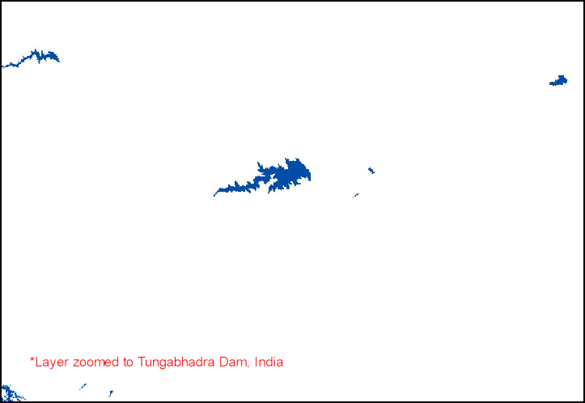
Learn more about offline WMS and comparison between different formats in this article Offline WMS – Benchmarking raster formats for QField by OpenGIS.ch.
Exercise 4
Instead of specifying the resolution in degrees, we want to download the layer at a specific resolution in meters. We can re-project the layer to a projected CRS and specify the output resolution in the units of the target CRS.
Create a command that takes the reservoirs.xml file and
creates a GeoTiff file called
reservoirs_india_reprojected.tiffor the India region at
500m resolution in the CRS WGS 84 / India NSF LCC
(EPSG:7755).
You can use the hints below to construct your command.
- Specify the extent using
-teoption as68.106 6.762 97.412 37.078in thexmin ymin xmax ymaxorder. - The extent coordinates are in WGS84 Lat/Lon coordinates. So specify
the CRS of the extent coordinates using
-te_srs. - Use the
-t_srsoption to specify the target CRS asEPSG:7755. - Use the
-troption to specify the X and Y pixel resolution.
1.6 Georeferencing
GDAL command-line utilities are extremely useful in batch georeferencing tasks. We will learn 2 different techniques for georeferencing/warping images.
1.6.1 Georeferencing Images with Bounding Box Coordinates
Often you get images from web portals that are maps but lack
georeferencing information. Data from weather satellites, output from
simulations, exports from photo editing software etc. can contain images
that reference a fixed frame on the earth but are given in regular image
formats such as JPEG or PNG. If the bounding box coordinates and the CRS
used in creating these images are known, use gdal_translate
command to assign georeference information. The -a_ullr
option allows you to specify the bounding box coordinates using the
Upper-Left (UL) and Lower-Right (LR) coordinates.
Your data package contains the image file
earth_at_night.jpg. This is a beautifully rendered image of
the earth captured at night time. You will see that this is a plain JPEG
image without any georeference information.
gdalinfo earth_at_night.jpgSince this is a global image, we know the corner coordinates. We can
assign the CRS EPSG:4326 using the -a_srs
option and specify the bounding box coordinates in the following order
<ulx> <uly> <lrx> <lry>.
Windows
gdal_translate -a_ullr -180 90 180 -90 -a_srs EPSG:4326 ^
earth_at_night.jpg earth_at_night.tif ^
-co COMPRESS=JPEG -co TILED=YES -co PHOTOMETRIC=RGBMac/Linux
gdal_translate -a_ullr -180 90 180 -90 -a_srs EPSG:4326 \
earth_at_night.jpg earth_at_night.tif \
-co COMPRESS=JPEG -co TILED=YES -co PHOTOMETRIC=RGBThe resulting file earth_at_night.tif is a GeoTiff file
with the correct georeference information and can now be used in GIS
software.
gdalinfo earth_at_night.tif
1.6.2 Georeferencing with GCPs
Another option for georeferencing images it by using Ground Control
Points (GCPs) or Tie-Points. A GCP specifies the real-world coordinates
for a given pixel in the image. The GCPs can be obtained by reading the
map markings or locating landmarks from a georeferenced source. Given a
set of GCPs, gdalwarp can georeference the image using a
variety of transformation types.
Your data package contain an old scanned map called
1870_southern_india.jpg.

The map has graticule lines with latitude and longitude markings. To obtain the GCPs, we can read the coordinate values at the grid intersections and find the pixel’s image coordinates. You can use an image viewer or the Georeferencer tool in QGIS to obtain GCPs like below.
| pixel (column) | line (row) | X (Longitude) | Y (Latitude) |
|---|---|---|---|
| 418 | 893 | 70 | 15 |
| 380 | 2432 | 70 | 5 |
| 3453 | 2434 | 90 | 5 |
| 3407 | 895 | 90 | 15 |
| 2662 | 911 | 85 | 15 |
The first step is to store these GCPs in the image metadata using
utility gdal_translate.
Windows
gdal_translate -gcp 418 893 70 15 -gcp 380 2432 70 5 -gcp 3453 2434 90 5 ^
-gcp 3407 895 90 15 -gcp 2662 911 85 15 ^
1870_southern-india.jpg india-with-gcp.tifMac/Linux
gdal_translate -gcp 418 893 70 15 -gcp 380 2432 70 5 -gcp 3453 2434 90 5 \
-gcp 3407 895 90 15 -gcp 2662 911 85 15 \
1870_southern-india.jpg india-with-gcp.tifNow that the GCPs are stored in the image, we are ready to do the georeferencing. Assuming the CRS of the map is a Geographic CRS based on the Everest 1830 datum, we choose EPSG:4042 as the target CRS.
Next, we need to choose the transformation type.
gdalwarp supports the following transformation types
- Polynomial 1,2 or 3 using
-orderoption - Thin Plate Spline using the
-tpsoption
Let’s try Polynomial 1 transformation and check the results.
Windows
gdalwarp -t_srs EPSG:4042 -order 1 -tr 0.005 0.005 ^
india-with-gcp.tif india-reprojected-polynomial.tif ^
-co COMPRESS=JPEG -co JPEG_QUALITY=50 -co PHOTOMETRIC=YCBCRMac/Linux
gdalwarp -t_srs EPSG:4042 -order 1 -tr 0.005 0.005 \
india-with-gcp.tif india-reprojected-polynomial.tif \
-co COMPRESS=JPEG -co JPEG_QUALITY=50 -co PHOTOMETRIC=YCBCR
Exercise 5
Try the Thin-plate-spline transformation on the
india-with-gcp.tif file and save the results as
india-reprojected-tps.tif file. Note the Thin-Place-Splie
option is available at -tps with the gdalwarp
command.
Assignment
UK’s Department of Environment Food & Rural Affairs (DEFRA) provides country-wide LiDAR data and products via the Defra Data Services Platform under an open license.
Your data package contains a folder london_1m_dsm. This
folder contains 1m resolution Digital Surface Model (DSM) tiles for
central London generated from a LIDAR survey. The tiles are in the Arc/Info ASCII
Grid format with the .asc extension. The tiles do not
contain any projection information but the metadata
contains the information that the CRS for the dataset is
EPSG:27700 British National Grid.
Apply the skills you learnt in this module to create an output product suitable for analysis. The result should be a single georeferenced mosaic in the GeoTIFF format with appropriate compression.
- Hint: Use the
gdal_translateprogram with the-a_srsoption to assign a CRS.
2. OGR Tools
We will now learn to process vector data using OGR Tools. These are a suite of tools that are part of the GDAL package and follow the same convention. In addition to format translation, the OGR tools also support running Spatial SQL queries - making them very powerful to build Spatial ETL pipelines.

2.1 ETL Basics
In this section, we will see how we can build an Extract-Transform-Load (ETL) process in a step-by-step manner. The example workflow will show you how to
- Read a CSV data source
- Convert it to point data layer
- Assign it a CRS
- Extract a subset
- Change the data type of a column
- Write the results to a GeoPackage.
2.1.1 Read a CSV data source
Your data package has a CSV file called worldcities.csv.
This file contains basic information about major cities in the world
along with their coordinates.
Let’s use the ogrinfo command to inspect the
dataset.
ogrinfo worldcities.csv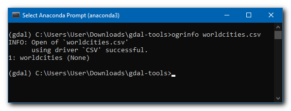
The program can open and read the file successfully, but it doesn’t
show any other info. We can use the -al option to actually
read all the lines from the file and combine it with the
-so option to print a summary.
ogrinfo -so -al worldcities.csv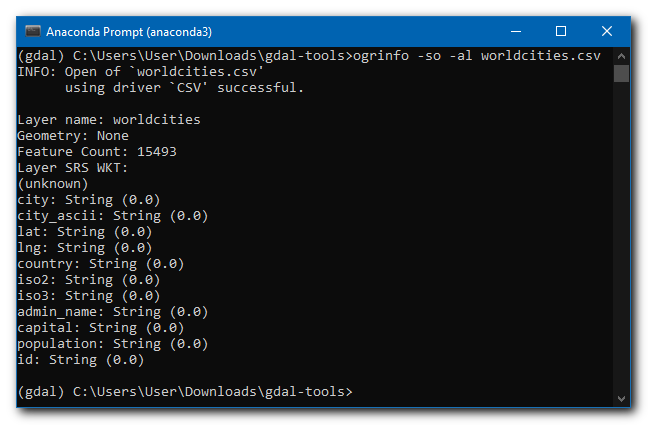
2.1.2 Convert it to point data layer
We now get a summary with the total number of features in the file
along with columns and their types. This is a plain CSV file. Let’s turn
it into a spatial data layer using the X and Y coordinates supplied in
the lng and lat fields. The -oo
option allows us to specify format-specific options. The OGR
CSV Driver allows specifying a list of column names or a name
pattern (such as Lat*) s using the
X_POSSIBLE_NAMES and Y_POSSIBLE_NAMES options
to specify which columns contain geometry information.
ogrinfo -so -al worldcities.csv -oo X_POSSIBLE_NAMES=lng -oo Y_POSSIBLE_NAMES=lat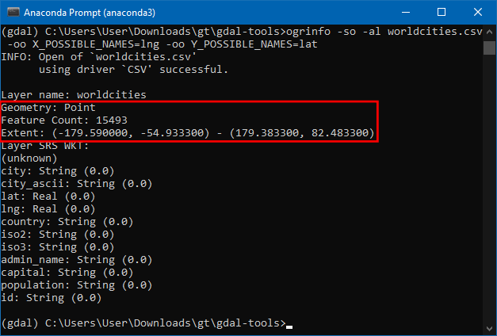
OGR is now able to recognize this layer as Point geometry layer.
Let’s write this to a spatial data format. We can use the
ogr2ogr utility to translate between different formats. The
following command creates a new GeoPackage file called
worldcities.gpkg from the CSV file.
Windows
ogr2ogr -f GPKG worldcities.gpkg worldcities.csv ^
-oo X_POSSIBLE_NAMES=lng -oo Y_POSSIBLE_NAMES=lat Mac/Linux
ogr2ogr -f GPKG worldcities.gpkg worldcities.csv \
-oo X_POSSIBLE_NAMES=lng -oo Y_POSSIBLE_NAMES=lat 
2.1.3 Assign it a CRS
We can open the result in a GIS software and it shows the cities
layer. While the point layer loads fine, it is missing a CRS. We can use
the a_srs option to assign a CRS to the resulting
layer.
Windows
ogr2ogr -f GPKG worldcities.gpkg worldcities.csv ^
-oo X_POSSIBLE_NAMES=lng -oo Y_POSSIBLE_NAMES=lat -a_srs EPSG:4326Mac/Linux
ogr2ogr -f GPKG worldcities.gpkg worldcities.csv \
-oo X_POSSIBLE_NAMES=lng -oo Y_POSSIBLE_NAMES=lat -a_srs EPSG:4326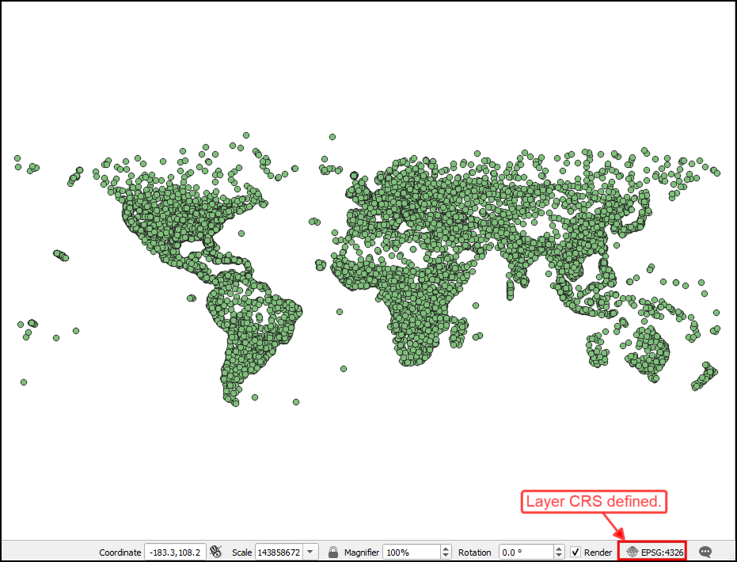
2.1.4 Extract a subset
OGR tools allow executing SQL queries against the data source. It
supports a subset of the SQL capability that is described in the OGR
SQL Syntax. A simple way to select a subset of features is using the
-where option. This allows you to specify an attribute
query to filter the results. Here we modify our command to extract only
the cities where the country column has the value
India.
Windows
ogr2ogr -f GPKG mycities.gpkg worldcities.csv ^
-oo X_POSSIBLE_NAMES=lng -oo Y_POSSIBLE_NAMES=lat -a_srs EPSG:4326 ^
-where "country = 'India'"Mac/Linux
ogr2ogr -f GPKG mycities.gpkg worldcities.csv \
-oo X_POSSIBLE_NAMES=lng -oo Y_POSSIBLE_NAMES=lat -a_srs EPSG:4326 \
-where "country = 'India'"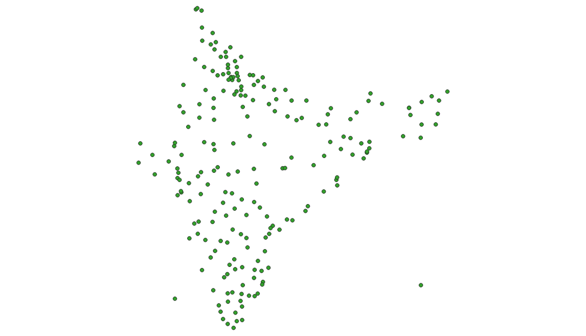
2.1.5 Change the data type of a column
You can also execute any SQL statement on the input data source. This
is a very powerful feature that allows you to filter, join, transform,
and summarize the input data. We can apply this on our data layer to
transform a column type from string to integer. The column
population from the input CSV has the type string.
Since this field is primarily used to store integer values, we can use
the CAST() SQL function to change the type to
integer. The SELECT statement also allows us to
pick only the relevant fields that will get written to the output.
Windows
ogr2ogr -f GPKG mycities.gpkg worldcities.csv ^
-oo X_POSSIBLE_NAMES=lng -oo Y_POSSIBLE_NAMES=lat -a_srs EPSG:4326 ^
-sql "SELECT city, country, CAST(population AS integer) as population ^
from worldcities where country = 'India'"Mac/Linux
ogr2ogr -f GPKG mycities.gpkg worldcities.csv \
-oo X_POSSIBLE_NAMES=lng -oo Y_POSSIBLE_NAMES=lat -a_srs EPSG:4326 \
-sql "SELECT city, country, CAST(population AS integer) as population \
from worldcities where country = 'India'"
2.1.6 Rename the layer in GeoPackage.
Lastly, we can rename the name of the output layer using the
-nln option.
Windows
ogr2ogr -f GPKG mycities.gpkg worldcities.csv ^
-oo X_POSSIBLE_NAMES=lng -oo Y_POSSIBLE_NAMES=lat -a_srs EPSG:4326 ^
-sql "SELECT city, country, CAST(population AS integer) as population ^
from worldcities where country = 'India'" -nln mycitiesMac/Linux
ogr2ogr -f GPKG mycities.gpkg worldcities.csv \
-oo X_POSSIBLE_NAMES=lng -oo Y_POSSIBLE_NAMES=lat -a_srs EPSG:4326 \
-sql "SELECT city, country, CAST(population AS integer) as population \
from worldcities where country = 'India'" -nln mycities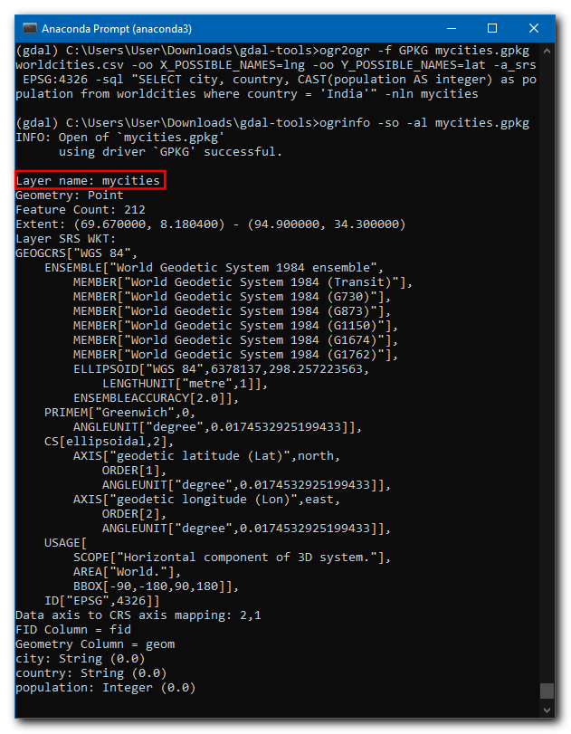
This shows the power of OGR command-line tools. In just a single line, we can read, filter, transform and write the results in any output format supported by OGR.
Exercise 6
Write a command using ogr2ogr that performs the
following operations.
- Read the newly created
mycitieslayer from themycities.gpkgfile. - Reproject the layer to a new CRS EPSG:7755 (WGS84 / India NSF LCC).
- Save the results as a shapefile
mycities.shp
All of the above operations should be done in a single-command. Once you arrive at a solution, see if you can improve it by working on the following challenges:
Challenge 1: You will get a warning that some field values could not be written correctly. This is because the default encoding for the Shapefile format is ISO-8859-1 - which doesn’t support non-latin characters. You can specify the encoding to UTF-8 using the
-lcooption inogr2ogrcommand. Hint: Review the Layer Creation Options for the shapefile driver to see the correct syntax.Challenge 2: While you are exploring the Layer Creation Options, add an option to create a spatial index on the output shapefile. Hint: You can specify the
-lcooption multiple times in the command.
2.2 Merging Vector Files
Another useful utility provided by OGR is ogrmerge.py. This command can merge several vector layers into a single data layer. It also has several options to control how the datasets are merged - making it a very handy tool for data processing tasks.
We will work with several GeoJSON files containing locations of
earthquakes. Your data package contains several GEOJSON files in the
earthquakes/ directory. We will merge these 12 files into a
single file. Switch to the directory
cd earthquakesWe will create a geopackage file by merging all files in the
directory. Windows users may need to specify the full path to
ogrmerge.py script as follows.
Windows
python %CONDA_PREFIX%\Scripts\ogrmerge.py -o earthquakes.gpkg *.geojsonMac/Linux
ogrmerge.py -o earthquakes.gpkg *.geojson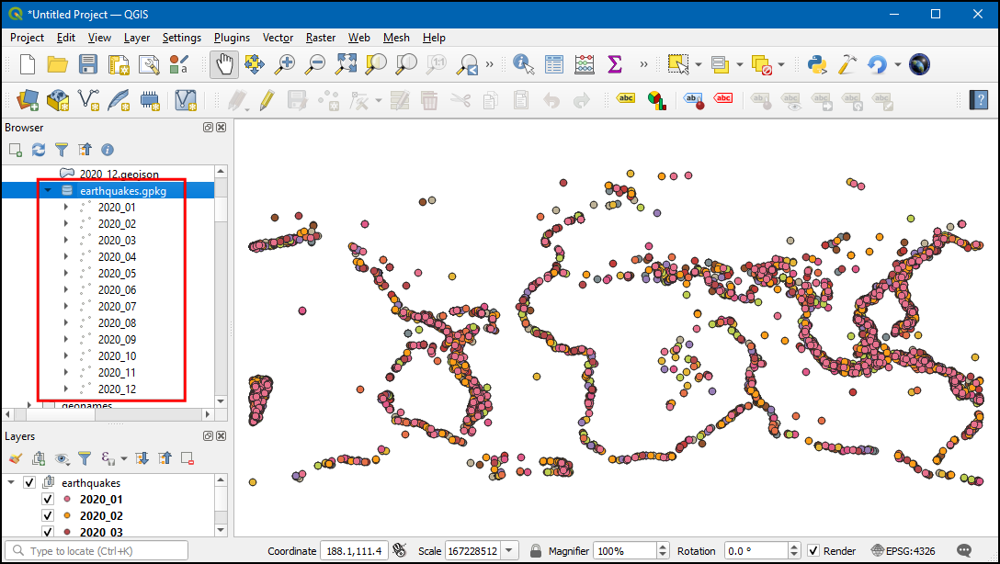
The result will be a single geopackage containing 12 layers - one for
each source file. For most applications, it will be preferable to
combine source files into a single layer. We can use the
-single option to indicate we want a single layer as the
output. We also use the -nln option to specify the name of
the merged layer. Since the GeoPackage dataset already exists, we need
to specify the -overwrite_ds to overwrite the file with the
new content.
Windows
python %CONDA_PREFIX%\Scripts\ogrmerge.py -o earthquakes.gpkg *.geojson ^
-single -nln all_earthquakes -overwrite_dsMac/Linux
ogrmerge.py -o earthquakes.gpkg *.geojson \
-single -nln all_earthquakes -overwrite_dsNow you will have a single layer named all_earthquakes
in the GeoPackage containing all earthquakes recorded during the
year.

Tip: There is a very useful option
-src_layer_field_namethat can add a new field to the output layer containing the name of the input file which contributed that particular record.
Exercise 7
Create a new GeoPackage large_earthquakes.gpkg
containing only the earthquakes with magnitude greater than 4.5.
- Use
ogr2ogrutility to read theearthquakes.gpkgfile created in the previous section. - Use the
-whereoption to write the query to filter the records wheremagfield has values greater>4.5.
Challenge: Instead of creating a new geopackage, add a layer named
large_earthquakes to the existing
earthquakes.gpkg file. Hint: Use the
-update option along with -nln to specify the
layer name.
2.3 Geoprocessing and Spatial Queries
We have seen examples of using SQL queries in OGR commands. So far we have used the queries that adhere to the OGR SQL Dialect. OGR Tools also have support SQLite dialect. The major advantage of using the SQLite dialect is that you can use Spatial SQL functions provided by Spatialite. This enables a wide range of applications where you can do spatial queries using OGR tools. A major difference when using the SQLite dialect is that you must specify the geometry column explicitly.
Let’s do some geoprocessing and see how we can use spatial queries
with OGR Tools. Your data package as a geopackage file
spatial_query.gpkg. This geopackage contains 2 layers.
metro_stations: Point layer with metro rail locations in the city of Melbourne.bars_and_pubs: Point layer with locations of bars and pubs in the city of Melbourne.
Let’s see how we can add a new layer to this geopackage with all bars and pubs that are within 500m of a metro station.
2.3.1 Reprojecting Vector Layers
The source data layers are in the CRS EPSG:4326. As we
want to run a spatial query with distance in meters, let’s reproject
both the layers to a projected CRS. Let’s use the ogr2ogr
command to reproject both the input layers and save them into the same
geopackage. We can use -t_srs option allows us to specify
EPSG:7855 (GDA2020 / MGA Zone 55) as the target
projection. the -update option along with -nln
tells ogr2ogr to create a new layer and save it in the same
geopackage.
Windows
ogr2ogr -t_srs EPSG:7855 spatial_query.gpkg spatial_query.gpkg ^
bars_and_pubs -update -nln bars_and_pubs_reprojected
ogr2ogr -t_srs EPSG:7855 spatial_query.gpkg spatial_query.gpkg ^
metro_stations -update -nln metro_stations_reprojectedMac/Linux
ogr2ogr -t_srs EPSG:7855 spatial_query.gpkg spatial_query.gpkg \
bars_and_pubs -update -nln bars_and_pubs_reprojected
ogr2ogr -t_srs EPSG:7855 spatial_query.gpkg spatial_query.gpkg \
metro_stations -update -nln metro_stations_reprojected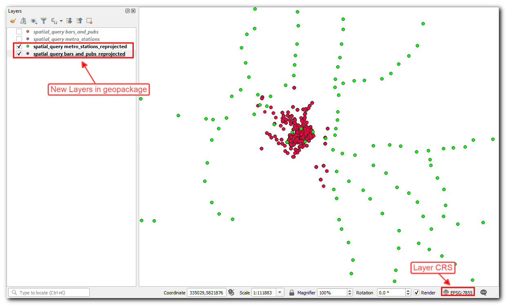
2.3.2 Creating Buffers
Let’s buffer the metro_stations_reprojected layer using
a distance of 500 meters. Here we specify the SQL query
with the -sql option. Note the use of the
ST_Buffer() function which is provided by the Spatialite
engine. We need to specify -dialect SQLITE as the query
uses spatial functions.
Spatial database functions often have the
ST_prefix. ST stands for Spatial Type.
Windows
ogr2ogr spatial_query.gpkg spatial_query.gpkg -update -nln metro_stations_buffer ^
-sql "SELECT m.station, ST_Buffer(m.geom, 500) as geom FROM ^
metro_stations_reprojected m" -dialect SQLITE Mac/Linux
ogr2ogr spatial_query.gpkg spatial_query.gpkg -update -nln metro_stations_buffer \
-sql "SELECT m.station, ST_Buffer(m.geom, 500) as geom FROM \
metro_stations_reprojected m" -dialect SQLITE Metro Station Buffers
This query results in individual overlapping buffers. We can dissolve
the buffers using ST_Collect() function.
Windows
ogr2ogr spatial_query.gpkg spatial_query.gpkg -update ^
-nln metro_stations_buffer_dissolved -sql "SELECT ST_Union(d.geom) as geom ^
FROM (SELECT ST_Collect(buffer(m.geom, 500)) as geom ^
FROM metro_stations_reprojected m) as d" -dialect SQLITEMac/Linux
ogr2ogr spatial_query.gpkg spatial_query.gpkg -update \
-nln metro_stations_buffer_dissolved -sql "SELECT ST_Union(d.geom) as geom \
FROM (SELECT ST_Collect(buffer(m.geom, 500)) as geom \
FROM metro_stations_reprojected m) as d" -dialect SQLITEDissolved Buffers
2.3.3 Performing Spatial Queries
Now that we have a polygon layer with the buffer region around the
metro stations, we can use the ogr_layer_algebra.py
tool to select the metro stations falling within the buffer region. This
tool can perform various types of spatial queries, including
Intersection, Difference (Erase), Union etc. We will use the
Clip mode to select features from the input layer clipped to
the features from the secondary layer.
Windows
python %CONDA_PREFIX%\Scripts\ogr_layer_algebra.py Clip ^
-input_ds spatial_query.gpkg -input_lyr bars_and_pubs_reprojected ^
-method_ds spatial_query.gpkg -method_lyr metro_stations_buffer_dissolved ^
-output_ds output.gpkg -output_lyr selected -nlt POINTMac/Linux
ogr_layer_algebra.py Clip \
-input_ds spatial_query.gpkg -input_lyr bars_and_pubs_reprojected \
-method_ds spatial_query.gpkg -method_lyr metro_stations_buffer_dissolved \
-output_ds output.gpkg -output_lyr selected -nlt POINT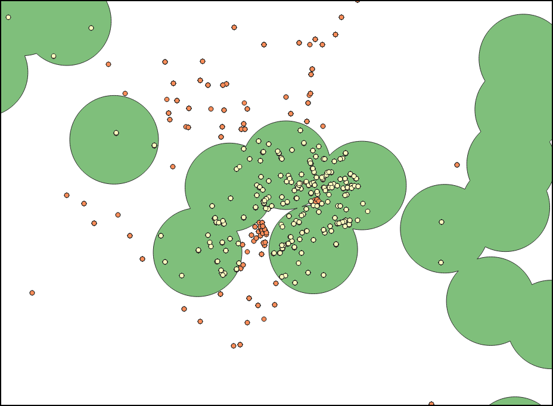
2.3.4 Data Cleaning
The previous query does the job and you find all points that are within the buffer region. But you will notice that there are many duplicate points at the same location. Upon inspecting, you will note that the source data contains multiple features for each establishment from different years. We can run a final SQL query to de-duplicate the data by selecting the feature from the latest year for each establishment. Note that some column names have spaces in the names, so we enclose them in double-quotes.
Windows
ogr2ogr -t_srs EPSG:4326 output.gpkg output.gpkg -update ^
-nln cleaned -sql "SELECT t1.* FROM selected t1 ^
JOIN (SELECT \"Property ID\", MAX(\"Census year\") as year FROM selected ^
GROUP BY \"Property ID\") t2 ON t1.\"Property ID\" = t2.\"Property ID\" ^
AND t1.\"Census year\" = t2.year"Mac/Linux
ogr2ogr -t_srs EPSG:4326 output.gpkg output.gpkg -update \
-nln cleaned -sql "SELECT t1.* FROM selected t1 \
JOIN (SELECT \"Property ID\", MAX(\"Census year\") as year FROM selected \
GROUP BY \"Property ID\") t2 ON t1.\"Property ID\" = t2.\"Property ID\" \
AND t1.\"Census year\" = t2.year"
3. Running commands in batch
You can run the GDAL/OGR commands in a loop using Python. For
example, if we wanted to convert the format of the images from JPEG200
to GeoTiff for all files in a directory, we would want to run a command
like below for every image. Here we want the {input} and
{output} values to be determined from the files in a
directory.
gdal_translate -of GTiff -co COMPRESS=JPEG {input} {output}But it would be a lot of manual effort if you want to run the
commands on hundreds of input files. Here’s where a simple python script
can help you automate running the commands in a batch. The data
directory contains a file called batch.py with the
following python code.
import os
input_dir = 'naip'
command_string = 'gdal_translate -of GTiff -co COMPRESS=JPEG {input} {output}'
for file in os.listdir(input_dir):
if file.endswith('.jp2'):
input = os.path.join(input_dir, file)
filename = os.path.splitext(os.path.basename(file))[0]
output = os.path.join(input_dir, filename + '.tif')
command = command_string.format(input=input, output=output)
print('Running ->', command)
os.system(command)In Anaconda Prompt, run the following command from
gdal-tools directory to start batch processing on all tiles
contained in the naip/ directory.
python batch.pyThe data directory also contains an example of running the batch commands in parallel using python’s built-in multiprocessing library. If your system has multi-core CPU, running commands in parallel like this on multiple threads can give you performance boost over running them in series.
import os
from multiprocessing import Pool
input_dir = 'naip'
command_string = 'gdal_translate -of GTiff -co COMPRESS=JPEG {input} {output}'
num_cores = 4
def process(file):
input = os.path.join(input_dir, file)
filename = os.path.splitext(os.path.basename(file))[0]
output = os.path.join(input_dir, filename + '.tif')
command = command_string.format(input=input, output=output)
print('Running ->', command)
os.system(command)
files = [file for file in os.listdir(input_dir) if file.endswith('.jp2')]
if __name__ == '__main__':
p = Pool(num_cores)
p.map(process, files)The script runs the commands both in parallel and serial mode and prints the time taken by each of them.
python batch_parallel.py4. Automating and Scheduling GDAL/OGR Jobs
The easiest way to run commands on a schedule on a Linux-based server is using a Cron Job.
You will have to edit your crontab and schedule the
execution of your script (either Shell Script or Python Script). The key
is to activate the conda environment before execution of the script.
Assuming you have created a script to execute some GDAL/OGR commands
and placed it at /usr/local/bin/batch.py, here’s a sample
crontab entry that executes it every morning at 6am.
0 6 * * * conda activate gdal;python /use/local/bin/batch.py; conda deactivateIf you get an error while execution, you may have to include some
environment variables in the crontab file so it can find
conda correctly. Learn
more.
SHELL=/bin/bash
BASH_ENV=~/.bashrc
0 6 * * * conda activate gdal;python batch-parallel.py; conda deactivateTips for Improving Performance
Configuration Options
GDAL has several configuration options that can be tweaked to help with faster processing.
--config GDAL_CACHEMAX 512: This option is the one that helps speed up most GDAL commands by allowing them to use larger amount of RAM (512 MB) reading/writing data.--config GDAL_NUM_THREADS ALL_CPUS: This option helps speed up write speed by using multiple threads for compression.--debug on: Turn on debugging mode. This prints additional information that may help you find performance bottlenecks.
Multithreading
gdalwarp utility supports multithreaded processing.
There are 2 different options for parallel processing.
-multi: This option parallelizes I/O and CPU operations.-wo NUM_THREADS=ALL_CPUS: This option parallelizes CPU operations over several cores.
There is also another option that allows gdalwarp to use
more RAM for caching. This option is very helpful to speed up operations
on large rasters
-wm: Set a higher memory for caching
All of these options can be combined that may result in faster processing of the data.
gdalwarp -cutline aoi.shp -crop_to_cutline naip.vrt aoi.tif -co COMPRESS=DEFLATE -co TILED=YES -multi -wo NUM_THREADS=ALL_CPUS -wm 512 --config GDAL_CACHEMAX 512Supplement
Check Supported Formats and Capabilities
The GDAL binaries are built to include support for many common data formats. To check what formats are supported in your GDAL distribution, you can run the following command
gdalinfo --formatsAlternatively the --format flag can be used with any
other utilities like gdal_translate or ogrinfo
to obtain this list.
The output lists the shortnames of all the drivers, whether supports vector or raster data along with abbreviations indicating the capabilities.
| Abbreviation | Capabilities |
|---|---|
| r | read |
| ro | read only |
| w | write (create dataset) |
| w+ | write with (support to update) |
| s | supports subdatasets |
| v | supports virtual access - eg. /vsimem/ |
That means an abbreviation of rov indicates that it is a
read-only format that supports virtual access.
QGIS distributes versions of GDAL that also has support for non-open formats, such as MrSID. You can use the commands from the included GDAL distribution. The location will depend on the platform and the distribution. Below is an example of how to set the correct path and environment variables for using that.
Open a Command Prompt/Terminal and run the following to set the correct path.
Windows
set OSGEO4W_ROOT=C:\OSGeo4W
call "%OSGEO4W_ROOT%\bin\o4w_env.bat"
set PATH=%OSGEO4W_ROOT%\bin;%OSGEO4W_ROOT%\apps\qgis-ltr\binMac
export PATH=/Applications/$QGIS_VERSION.app/Contents/MacOS/bin:$PATHRunning gdalinfo --formats will not list MrSID and other
proprietary formats.
Extracting Image Metadata and Statistics
You can run gdalinfo command with the -json
option which returns the info as a JSON string. This allows you to
programatically access the information and parse it.
Let’s say we want to extract the maximum value of the
merged.vrt created in the Merging
Tiles section. We can get the output of the command as a JSON by
supplying the -json option.
gdalinfo -stats -json merged.vrtNext, we need a way to parse the JSON and extract the fields we are
interested in. There are many other command-line utilities designed to
do just that. Here we use the popular JSON processing utility jq. You can download and
install the jq CLI for your operating system and make sure
it is in the system path. Then we can extract the required data using
the jq query like below.
gdalinfo -stats -json merged.vrt | jq ".bands[0].maximum"
Alternatively, you can also run the command via Python and use the
json module to parse and extract the results. The code
below shows how to extract the min and max values for each of the SRTM
tiles used in the example earlier.
import os
import json
import subprocess
input_dir = 'srtm'
command = 'gdalinfo -stats -json {input}'
for file in os.listdir(input_dir):
if file.endswith('.hgt'):
input = os.path.join(input_dir, file)
filename = os.path.splitext(os.path.basename(file))[0]
output = subprocess.check_output(command.format(input=input), shell=True)
info_dict = json.loads(output)
bands = info_dict['bands']
for band in bands:
band_id = band['band']
min = band['minimum']
max = band['maximum']
print('{},{},{},{}'.format(filename, band_id, min, max))Validating COGs
If you want to check whether a given GeoTIFF file is a valid Cloud-Optimized GeoTIFF (COG) or not, there are several methods.
- Using the
riocommand-line utility
Rasterio provides a command-line utility called rio to perform various raster operations on the command-line. The rio-cogeo plugin to Rasterio adds support for creation and validation of COGs.
You can install the required libraries in your conda environment as follows.
conda create --name cogeo
conda activate cogeo
conda install -c conda-forge rasterio rio-cogeoOnce installed, you can validate a COG using the
rio cogeo command.
rio cogeo validate merged_cog.tifThis works on cloud-hosted files as well.
rio cogeo validate /vsicurl/https://storage.googleapis.com/spatialthoughts-public-data/ntl/viirs/viirs_ntl_2021_global.tif- Using Python
You can use the validate_cloud_optimized_geotiff.py script to check whether a file is a valid COG.
python validate_cloud_optimized_geotiff.py merged_cog.tifYou can also use it in your Python script as follows
import validate_cloud_optimized_geotiff.py
validate_cloud_optimized_geotiff.validate('merged_cog.tif')Creating Contours
Note : The
merged.tiffile used below was created in the Merging Tiles section.
The GDAL package comes with the utility gdal_countour
that creates contour lines and polygons from DEMs.
You can specify the interval between contour lines using the
-i option.
gdal_contour merged.tif contours.gpkg -i 500Contour Lines from DEM
Running the command with default options generates a vector layer
with contours but they do not have any attributes. If you want to label
your contour lines in your map, you may want to create contours with
elevation values as an attribute. You can use the -a option
and specify the name of the attribute.
gdal_contour merged.tif contours.gpkg -i 500 -a elevContour Lines with Elevation Attribute
You can also create polygon contours. Polygon contours are useful in
some applications such as hydrology where you want to derive average
depth of rainfall in the region between isohyets. You can specify the
-p option to create polygon contours. The options
-amin and -amax can be provided to specify the
attribute names which will store the min and max elevation for each
polygon. The command below creates a contour shapefile for the input
merged.tif DEM.
gdal_contour merged.tif contour_polygons.shp -i 500 -p -amin MINELEV -amax MAXELEVContour Polygons with Elevation Attributes
Creating Colorized Imagery
We can use gdaldem color-relief command to apply a color
palette to any one-band image to create a rendered image.
We create a file ntl_colormap.txt containing the pixel
intensity values mapped to RGB colors. The key nv is used
to assign a color to NoData values.
0 0 0 4
20 145 43 129
40 251 133 96
50 254 216 154
60 252 253 191
nv 255 255 255Apply the colormap to the single-band nighttime lights image.
gdaldem color-relief \
/vsicurl/https://storage.googleapis.com/spatialthoughts-public-data/ntl/viirs/viirs_ntl_2021_india.tif \
ntl_colormap.txt ntl_colorized.tifConvert the colorized GeoTIFF to a PNG. Specify the value 255 to set the transparency for the NoData values.
gdal_translate -of PNG -a_nodata 255 ntl_colorized.tif ntl_colorized.png
Creating Colorized Hillshade
If you want to merge hillshade and color-relief to create a colored
shaded relief map, you can use use gdal_calc.py to create
do gamma and overlay calculations to combine the 2 rasters. 1
gdal_calc.py -A hillshade.tif --outfile=gamma_hillshade.tif \
--calc="uint8(((A / 255.)**(1/0.5)) * 255)"gdal_calc.py -A gamma_hillshade.tif -B colorized.tif --allBands=B \
--calc="uint8( ( \
2 * (A/255.)*(B/255.)*(A<128) + \
( 1 - 2 * (1-(A/255.))*(1-(B/255.)) ) * (A>=128) \
) * 255 )" --outfile=colorized_hillshade.tifColorized Shaded Relief
Removing JPEG Compression Artifacts
Applying JPEG compression on aerial or drone imagery can cause the
results to have edge artifacts. Since JPEG is a lossy compression
algorithm, it causes no-data values (typically 0) being converted to
non-zero values. This causes problems when you want to mosaic different
tiles, or mask the black pixels. Fortunately, GDAL comes with a handy
tool called nearblack that is
designed to solve this problem. You can specify a tolerance value to
remove edge pixels that may not be exactly 0. It scans the image inwards
till it finds these near-black pixel values and masks them. Let’s say we
have a mosaic of JPEG compressed imagery without an alpha band and we
want to set a mask. If we simply set 0 as nodata value, you will end up
with edge artifacts, along with many dark pixels within the mosaic
(building shadows/water etc.) being masked. Instead we use the
nearblack program to set edge pixels with value 0-5 being
considered nodata.
nearblack -near 5 -setmask -o aoi_masked.tif aoi.tif \
-co COMPRESS=JPEG -co TILED=YES -co PHOTOMETRIC=YCBCR
JPEG Artifacts Cleaned by GDAL nearblack
Splitting a Mosaic into Tiles
When delivering large mosaics, it is a good idea to split your large
input file into smaller chunks. If you are working with a very large
mosaic, splitting it into smaller chunks and processing them
independently can help overcome memory issues. This is also helpful to
prepare the satellite imagery for Deep Learning. GDAL ships with a handy
script called gdal_retile.py that is designed for this
task.
Let’s say we have a large GeoTIFF file aoi.tif and want
to split it into tiles of 256 x 256 pixels, with an overlap to 10
pixels.
First we create a directory where the output tiles will be written.
mkdir tilesWe can now use the following command to split the file and write the
output to the tiles directory.
gdal_retile.py -ps 256 256 -overlap 10 -targetDir tiles/ aoi.tifThis will create smaller GeoTiff files. If you want to train a Deep
Learning model, you would typically require JPEG or PNG tiles. You can
batch-convert these to JPEG format using the technique shown in the Running Commands in batch section.
Since JPEG/PNG cannot hold the georeferencing information, we supply the
WORLDFILE=YES creation option.
gdal_translate -of JPEG <input_tile>.tif <input_tile>.jpg -co WORLDFILE=YESThis will create a sidecar file with the .wld extension
that will store the georeferencing information for each tile. GDAL will
automatically apply the georeferencing information to the JPEG tile as
long this file exists in the same directory. This way, you can make
inference using the JPG tiles, and use the .wld files with
your output to automatically georeference and mosaic the results.
Extracting Projection Information from a Raster
Sometimes you may need to extract and preserve georeferencing
information from a raster to be used later or with a different file. A
typical use case is Deep Learning - where you need to convert your
georeferenced tile (i.e. a GeoTIFF file) into a PNG or JPEG tile. If you
used gdal_retile.py as shown in the previous section, you will
have a World File accompanying each tile. But many times, you
only have the original GeoTIFF file and the resulting PNG tile. To copy
the georeferencing information from the GeoTIFF and apply it to the PNG,
you can use the following process.
Let’s say we have a georeferenced tile named
tile_1_1.tif and a annotated version of this tile from a
training dataset as a non-georeferenced tile
tile_1_1_annotated.png. We want to georeference this PNG
file using the projection and extent of the GeoTIFF file.

We can extract the extent and resolution of the original GeoTIFF
using the listgeo
tool. This tool is already part of the standard GDAL conda distribution.
We will extract the world file using the -tfw flag that
generates an ESRI world file.
listgeo -tfw tile_1_1.tifYou will see that a new file named tile_1_1.tfw is
generated alongside the original GeoTIFF. Next we extract the projecton
information using gdalsrsinfo
command. This command prints the projection information in a variety of
supported formats. We save the output to a file with a .prj
extension.
gdalsrsinfo tile_1_1.tif > tile_1_1.prjThe tile_1_1.tfw and tile_1_1.prj contain
all the information we need to georeference the PNG tile.
Let’s convert the PNG to a GeoTIFF file and assign the projection of the original tile.
gdal_translate -a_srs tile_1_1.prj tile_1_1_annotated.png tile_1_1_annotated.tifThe resulting file contains the projection but the extents are not
correct. We can use the geotifcp
tool to apply the extents from the world file to the GeoTIFF. This tool
is also part of the standard GDAL conda distribution.
geotifcp -e tile_1_1.tfw tile_1_1_annotated.tif tile_1_1_annotated_georeferenced.tifMerging Files with Different Resolutions
If you had a bunch of tiles that you wanted to merge, but some tiles
had a different resolution, you can use specify the
-resolution flag with gdalbuildvrt to ensure
the output file has the expected resolution.
Continuing the example from the Processing Aerial Imagery section,
we can create a virtual raster and specify the resolution
flag
gdalbuildvrt -input_file_list filelist.txt naip.vrt -resolution highest -r bilinearTranslating this file using gdal_translate or subsetting
it with gdalwarp will result in a mosaic with the highest
resolution from the source tiles.
Calculate Pixel-Wise Statistics over Multiple Rasters
gdal_calc.py can compute pixel-wise statistics over many
input rasters or multi-band rasters. Starting GDAL v3.3, it supports the
full range of numpy functions, such as numpy.average(),
numpy.sum() etc.
Here’s an example showing how to compute the per-pixel total from 12
different input rasters. The prism folder in your data
package contains 12 rasters of precipitation over the continental US. We
will compute pixel-wise total precipitation from these rasters. When you
read multiple rasters using the same input flag -A,
gdal_calc.py creates a 3D numpy array. It can then be reduced along the
axis 0 to produce totals.
cd prismgdal_calc.py \
-A PRISM_ppt_stable_4kmM3_201701_bil.bil \
-A PRISM_ppt_stable_4kmM3_201702_bil.bil \
-A PRISM_ppt_stable_4kmM3_201703_bil.bil \
-A PRISM_ppt_stable_4kmM3_201704_bil.bil \
-A PRISM_ppt_stable_4kmM3_201705_bil.bil \
-A PRISM_ppt_stable_4kmM3_201706_bil.bil \
-A PRISM_ppt_stable_4kmM3_201707_bil.bil \
-A PRISM_ppt_stable_4kmM3_201708_bil.bil \
-A PRISM_ppt_stable_4kmM3_201709_bil.bil \
-A PRISM_ppt_stable_4kmM3_201710_bil.bil \
-A PRISM_ppt_stable_4kmM3_201711_bil.bil \
-A PRISM_ppt_stable_4kmM3_201712_bil.bil \
--calc='numpy.sum(A, axis=0)' \
--outfile total.tifCurrently, gdal_calc.py doesn’t support reading
multi-band rasters as a 3D array. So if you want to apply a similar
computation on a multi-band raster, you’ll have to specify each band
separately. Let’s say, we want to calculate the pixel-wise average value
from the RGB composite created in the Merging individual
bands into RGB composite section. We can use the command as
follows.
gdal_calc.py \
-A rgb.tif --A_band=1 \
-B rgb.tif --B_band=2 \
-C rgb.tif --C_band=3 \
--calc='(A+B+C)/3' \
--outfile mean.tifExtracting Values from a Raster
A useful tool called gdallocationinfo
comes with the GDAL suite that can do point lookups from the raster at
one or more pairs of coordinates. Combined with GDAL’s capabilities to
stream data from cloud datasets with the Virtual File
System, you can efficiently lookup pixel values from without having
to load the entire raster into memory.
For example, we have a large (8GB) single-band Cloud-Optimized GeoTiff (COG) file on a Google Cloud Storage bucket. This file is a global mosaic of VIIRS Nighttime Lights for the year 2021 and the pixel values are the radiance values.
VIIRS Nighttime Lights 2021
To access this file, we use the /vsigs/ (Google Cloud
Storage files) handler and provide the path in form of
/vgigs/<bucket_name>/<file_name>. This
particular file is public, so we add the config option
--config GS_NO_SIGN_REQUEST YES.
gdalinfo /vsigs/spatialthoughts-public-data/ntl/viirs/viirs_ntl_2021_global.tif --config GS_NO_SIGN_REQUEST YESWe are successfully able to open and lookup the metadata of this
file. Now let’s query the pixel value at a single coordinate using
gdallocationinfo. We specify the location in WGS84 Lon/Lat
format, so use the -wgs84 option.
gdallocationinfo -valonly /vsigs/spatialthoughts-public-data/ntl/viirs/viirs_ntl_2021_global.tif -wgs84 77.5946 12.9716 --config GS_NO_SIGN_REQUEST YESYou can also lookup values of multiple points from a file. Let’s say
we have a text file called coordinates.txt with the
following 2 coordinates.
77.5946 12.9716
77.1025 28.7041We can lookup the pixel values at these coordinates by supplying this
to the gdallocationinfo command. We also supply the
-xml option so the output is structured and can be used for
post processing.
cat coordinates.txt | gdallocationinfo /vsigs/spatialthoughts-public-data/ntl/viirs/viirs_ntl_2021_global.tif \
-wgs84 --config GS_NO_SIGN_REQUEST YES -xml
Querying single or multiple values
Masking Values using a Binary Raster
Often we have binary images representing a data mask. We can use
numpy.where() function with gdal_calc.py to
mask pixels from any raster with a mask image.
Let’s say we have a binary.tif containing pixel values 0
and 1. We now want to set all pixels from merged.tif to No
Data where the binary.tif is 0. Assuming, we want to use
-32768 as the No Data value, we can use a
command like below.
gdal_calc.py -A merged.tif -B binary.tif \
--calc="numpy.where(B==1, A, -32768)" \
--NoDataValue -32768 --outfile masked.tifThis command says Wherever the value of B raster is 1, the output
should be the pixel values from A else it should be -32768. Since
we are also setting the -NoDataValue to -32768, the command
effectively sets all pixels where the condition doesn’t match (B != 1)
to NoData.
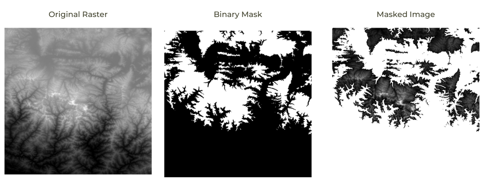
Raster to Vector Conversion
GDAL comes with the gdal_polygonize.py allowing us to
convert rasters to vector layers. Let’s say we want to extract the
coordinates of the highest elevation from the merged raster in the Merging Tiles section. Querying the raster
with gdalinfo -stats shows us that the highest pixel value
is 8748.
We can use gdal_calc.py to create a raster using the
condition to match only the pixels with that value.
gdal_calc.py --calc 'A==8748' -A merged.vrt --outfile everest.tif --NoDataValue=0The result of a boolean expression like above will be a raster with 1
and 0 pixel values. As we set the NoData to 0, we only have 1 pixel with
value 1 where the condition matched. We can convert it to a vector using
gdal_polygonize.py.
gdal_polygonize.py everest.tif everest.shpIf we want to extract the centroid of the polygon and print the
coordinates, we can use ogrinfo command.
ogrinfo everest.shp -sql 'SELECT AsText(ST_Centroid(geometry)) from everest' -dialect SQLiteViewshed Analysis
The gdal_viewshed command can do visibility analysis
using elevation rasters. This is a very useful analysis for many
applications including urban planning and telecommunications. We can
take the London 1m DSM dataset and carry out the visibility analysis
from a location.
We will determine all the areas of London that are visible from the top of the Tower 42 building. This is a skyscraper located in the city of London.
We take the merged DSM created for Assignment 1 and generate a viewshed.
The CRS of the dataset is EPSG:27700 so we need to get the observer
location coordinates in this CRS. We can use the
gdaltransform command to convert the Lat/Lon coordinates to
the coordinates in the target CRS. Run the command below and press
enter.
gdaltransform -s_srs EPSG:4326 -t_srs EPSG:27700The command takes input from the terminal. Enter the X and Y coordinate as follows
-0.083738 51.515178
Results of Viewshed Analysis
The output of the command are the X and Y coordinates
533061.985055201 181323.948402008. We round them off
and use it in the gdal_viewshed command.
gdal_viewshed -b 1 -ox 533062 -oy 181324 -oz 10 -md 100000.0 -f GTiff -co COMPRESS=DEFLATE -co PREDICTOR=2 merged.tif viewshed_tower42.tif
Results of Viewshed Analysis
Working with KML Files
Keyhole Markup Language (KML) is a XML-based file format primarily used by Google Earth. Often time, GIS users want to export their data to KML for visualizing it in Google Earth. You may also want to extract data from KML files or convert them into other spatial formats used in GIS. The GDAL KML Driver can both read and write KML files and provides many options to make the conversion compatible.
Exporting Data to KML files
Let’s take the metro_stations layer from the
spatial_query.gpkg file in your data package and export it
to a KML file metro_stations.kml.
ogr2ogr -f KML metro_stations.kml spatial_query.gpkg metro_stations KML Export without NameField
While the above command works, you will notice that when you open the
resulting file in Google Earth, the placemarks for each feature doesn’t
have any labels. This is because the KML format expects a field called
Name in the layer which is used as the label for each
placemark. If your data layer does not have such a field, you can supply
an alternate field name that will be used as labels using the
-dsco option. The metro_stations layer has a
field named station which we can use as the name field.
ogr2ogr -f KML metro_stations.kml spatial_query.gpkg metro_stations -dsco NameField=stationKML Export with NameField
Converting KML Files to Other Formats
The KML file format supports having multiple data layers within the
same KML file. We will now learn how to extract a specific data layer
and convert it to a shapefile. GDAL supports reading data from a URL
using the Virtual File
System. We can read a KML file from the internet using the
vsicurl/ prefix.
ogrinfo /vsicurl/https://developers.google.com/kml/documentation/KML_Samples.kml
Let’s read the Paths layer
ogrinfo /vsicurl/https://developers.google.com/kml/documentation/KML_Samples.kml Paths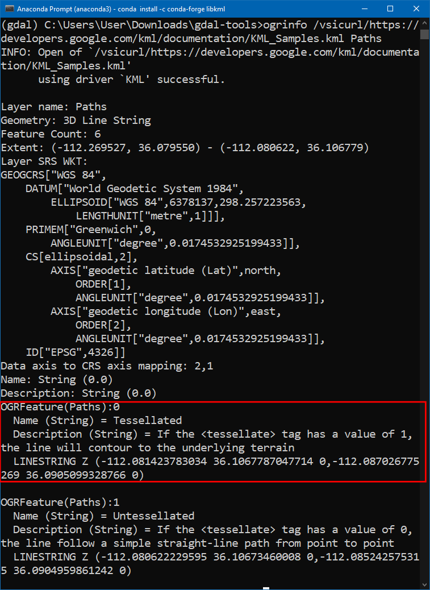
To extract the Paths layer from this KML file, we can
use ogr2ogr command. The default options create many
unwanted fields in the output. We can select a subset of the input
fields using the -select option.
ogr2ogr -f "ESRI Shapefile" paths.shp /vsicurl/https://developers.google.com/kml/documentation/KML_Samples.kml Paths -select "NAME,Description"
You can also convert a KML layer to a CSV file. The GDAL CSV Driver is
able to extract the geometry of features using the GEOMETRY
layer creation option. Let’s convert the Placemark layer
from the KML_Samples.kml to a CSV file with
X, Y and Z columns
extracted from the geometry.
ogr2ogr -f CSV points.csv /vsicurl/https://developers.google.com/kml/documentation/KML_Samples.kml Placemarks -lco GEOMETRY=AS_XYZ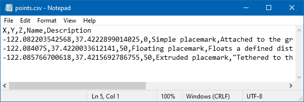
KML vs. LIBKML Drivers
If your GDAL binaries are compiled with support for the LIBKML Driver, it is preferable to use it over the KML driver. The LIBKML driver supports many more options and allows you to create fully featured KMLs.
Below is an example of data conversion using the LIBKML driver. To
specify the name field, the LIBKML driver uses an environment variable
called LIBKML_NAME_FIELD that can be specified with the
--config option
ogr2ogr -f LIBKML metro_stations.kml spatial_query.gpkg metro_stations --config LIBKML_NAME_FIELD stationIf your GDAL version has both KML and LIBKML drivers, OGR will prefer
the LIBKML driver. To force OGR to use the KML driver for reading files,
you can add --config OGR_SKIP LIBKML to your command.
Group Statistics
We can use SQL GROUP BY clause in ogr2ogr to generate
summary statistics from a layer. Let’s first create a geopackage from
the worldcities.csv layer.
ogr2ogr -oo X_POSSIBLE_NAMES=lng -oo Y_POSSIBLE_NAMES=lat -a_srs EPSG:4326 \
-sql "SELECT city, country, CAST(population as integer) as population from worldcities" \
worldcities.gpkg worldcities.csv -nln worldcitiesWe have a layer worldcities.gpkg that has
population and country columns. Let’s
calculate the total population per country. We can save the resulting
statistics as an Excel sheet.
ogr2ogr stats.xlsx worldcities.gpkg \
-sql "SELECT country, sum(population) as total_population from worldcities GROUP BY country"Using Virtual Layers
Similar to GDAL, OGR also supports Virtual File Format
(VRT). Compared to the raster version, the OGR Virtual Driver is
much more capable and can be used for on-the-fly data transformations.
Multiple data layers can be combined into a single virtual
layer using the XML-based .vrt format files. VRT files are
also used to configure reading tabular data into spatial data
formats.
Read Geonames Files
Your data package contains 3 large text files from Geonames in the
geonames folder. These are plain-text files in a
Tab-Separated Values (TSV) format. Change to the geonames
directory.
cd geonamesLet’s try reading one of the files CA.txt - which has
over 300K records of all placenames in Canada. To read this file, we
need to create a new file called CA.vrt with the following
content. Save the file in the same geonames directory.
<OGRVRTDataSource>
<OGRVRTLayer name="CA">
<SrcDataSource>CSV:CA.txt</SrcDataSource>
<SrcLayer>CA</SrcLayer>
</OGRVRTLayer>
</OGRVRTDataSource>
Let’s check if OGR can read the source text file via the newly
created CA.vrt file.
ogrinfo -al -so CA.vrt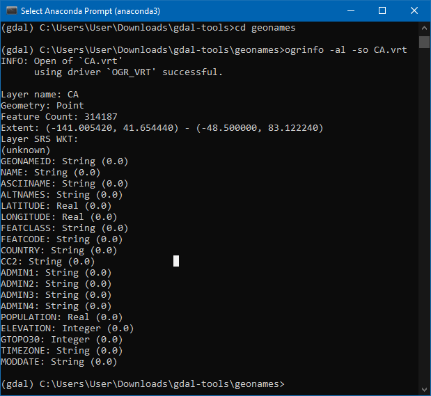
The ogrinfo command was able to successfully read the
data and show us the summary of the attributes as well as the total
feature count. Note that OGR has built-in support for the geonames file
format. So it was able to correctly detect the geometry columns without
us specifying it. For other datasets, you will have to specify the
geometry columns explicitly via the <GeometryField>
attribute in the VRT file.
Applying Filters
VRT format supports applying SQL queries on the source layer using
the <SrcSQL> field. This allows us to create an
on-the-fly filter that reads only a subset of the data. Update the
CA.vrt with the following content.
<OGRVRTDataSource>
<OGRVRTLayer name="CA">
<SrcDataSource>CSV:CA.txt</SrcDataSource>
<SrcLayer>CA</SrcLayer>
<SrcSQL>select * from CA where "FEATCLASS" = 'T'</SrcSQL>
</OGRVRTLayer>
</OGRVRTDataSource>
The VRT file now contains a SQL query to select only the mountain
features from the source file. Let’s run ogrinfo again and
check the output.
ogrinfo -al -so CA.vrt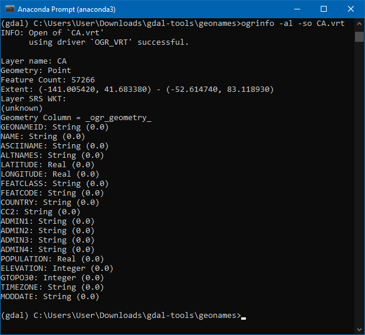
You will see that the output contains a subset of features, even though we never changed the source data.
Merging Files
The real power of the VRT file format lies in its ability to
dynamically combine multiple data sources into a single data layer. We
can adapt the previously created file and use
<OGRVRTUnionLayer> to create a single layer from the
3 separate text files. Save the following content into a new file named
NA.vrt.
<OGRVRTDataSource>
<OGRVRTUnionLayer name="NA">
<OGRVRTLayer name="CA">
<SrcDataSource>CSV:CA.txt</SrcDataSource>
<SrcLayer>CA</SrcLayer>
<SrcSQL>select * from CA where "FEATCLASS" = 'T'</SrcSQL>
</OGRVRTLayer>
<OGRVRTLayer name="MX">
<SrcDataSource>CSV:MX.txt</SrcDataSource>
<SrcLayer>MX</SrcLayer>
<SrcSQL>select * from MX where "FEATCLASS" = 'T'</SrcSQL>
</OGRVRTLayer>
<OGRVRTLayer name="US">
<SrcDataSource>CSV:US.txt</SrcDataSource>
<SrcLayer>US</SrcLayer>
<SrcSQL>select * from US where "FEATCLASS" = 'T'</SrcSQL>
</OGRVRTLayer>
</OGRVRTUnionLayer>
</OGRVRTDataSource>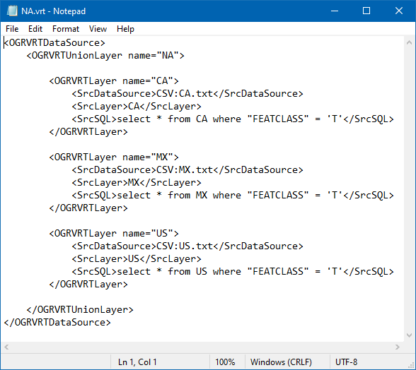
Let’s now translate the NA.vrt to a GeoPackage using the
ogr2ogr command.
ogr2ogr -f GPKG NA.gpkg NA.vrt -a_srs EPSG:4326This operation requires a lot of processing and may take a few minutes. You can add the
--config GDAL_CACHEMAX 512option to speed up the process. See Tips for Improving Performance section for more details.
This command reads all 3 text files, filters them for matching features, combines them and writes out a spatial layer containing all mountains in North America.
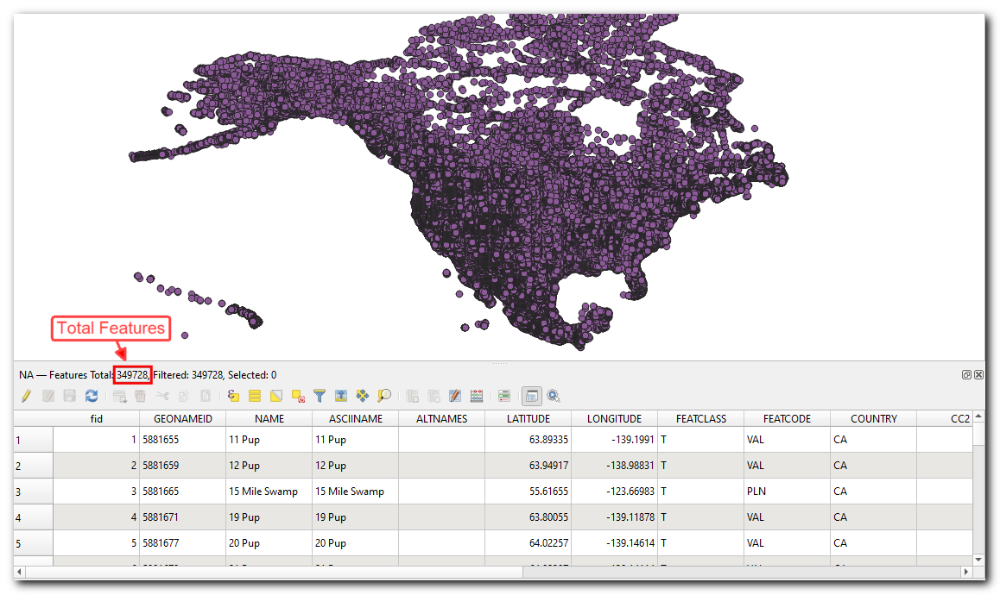
Resources
Data Credits
- Landsat: Landsat-8 image courtesy of the U.S. Geological Survey. Image downloaded from Google Cloud Platform and pre-processed using Semi Automatic Classification Plugin from QGIS
- Earth at Night image: Credit: NASA Earth Observatory/NOAA NGDC. Earth at Night flat hi-resolution map downloaded from NASA earth observatory
- William Mackenzie 1870 map of Southern India: out-of-copyright scanned map downloaded from Hipkiss’s Scanned Old Maps
- NAIP 2016 Aerial Imagery for California: The National Agriculture Imagery Program (NAIP). USDA-FSA-APFO Aerial Photography Field Office. Downloaded from NRCS
- London 1m DSM. Downloaded from Defra Data Services Platform. © Environment Agency copyright and/or database right 2019. All rights reserved.
- Melbourne Metro Stations: © 2019 The City of Melbourne Open Data Portal. Data provided by Metro Trains Melbourne
- Melbourne Bars and Pubs: © 2019 The City of Melbourne Open Data Portal. Data provided by Census of Land Use and Employment (CLUE)
- VIIRS Annual VNL V2 for 2021. C. D. Elvidge, M. Zhizhin, T. Ghosh, F-C. Hsu, “Annual time series of global VIIRS nighttime lights derived from monthly averages: 2012 to 2019”, Remote Sensing (In press)
License
This course material is licensed under a Creative Commons Attribution-NonCommercial 4.0 International License. You are free to use the material for any non-commercial purpose. Kindly give appropriate credit to the original author.
If you would like to utilize these materials as part of a commercial offering, you can purchase a Trainer License for a small fee.
Please contact us for pricing and terms.
© 2020 Ujaval Gandhi www.spatialthoughts.com
This course is offered as an instructor-led online class. Visit Spatial Thoughts to know details of upcoming sessions.
If you want to report any issues with this page, please comment below.